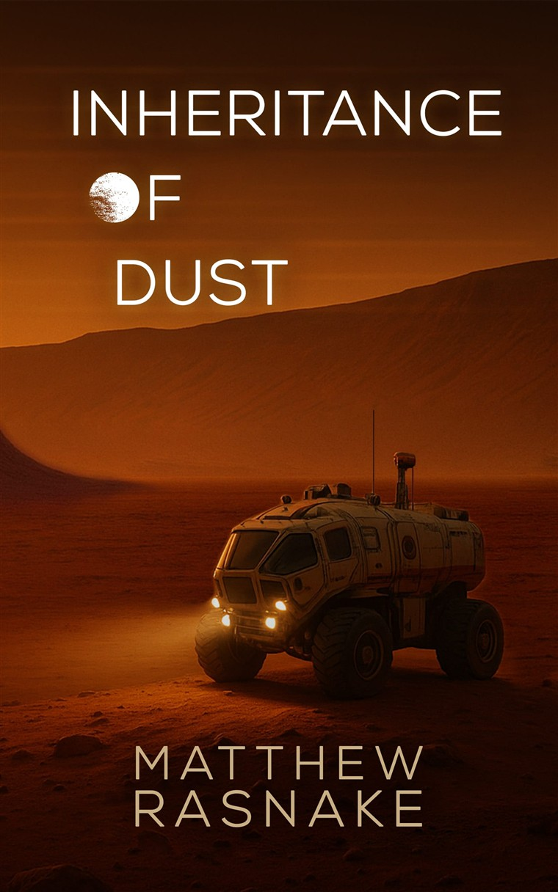

Inheritance of Dust
Leana, Luis and their children live on a Mars colony. When catastrophe on Earth cuts off supplies, the colony is stranded, and Leana has to guide it through loss toward whatever comes next. Taken from The Severed Sky.
Get Inheritance of Dust